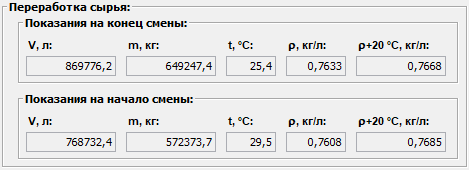

Описание области данных "Переработка сырья"
Область данных "Переработка сырья" отображает данные о сырье, переработанном за смену.
Эти данные поступают автоматически со счетчика сырья, поступившего с ТСП.
Внешний вид области "Переработка сырья".

Система фиксирует показания счетчика поступившего сырья на начало и конец смены, и расчитывает данные о количестве переработанного сырья за смену.
Результаты переработки сырья за смену отображаются в соответствующей области Итого за смену